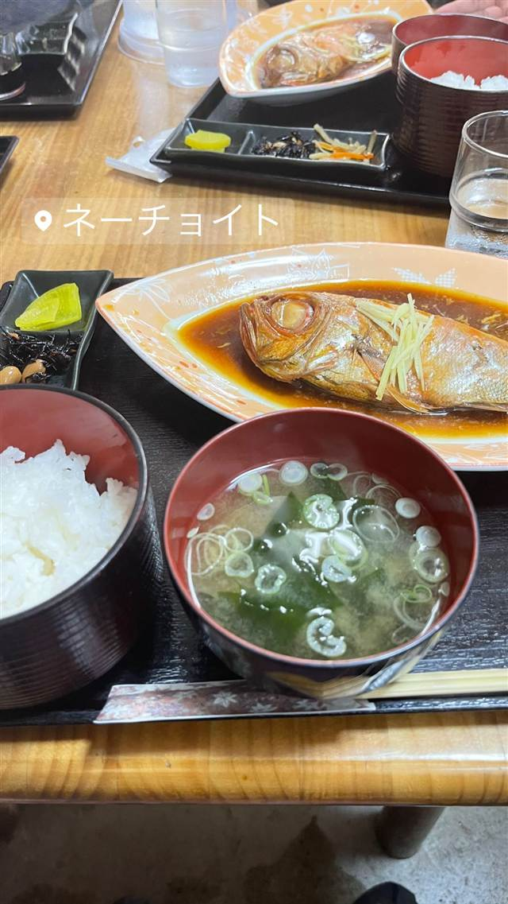

お食事処ネーチョイト
腰越の漁師直送の生しらすと刺身・アジフライの定食
ネーチョイト
2011年のクリスマスに開業した江の島の路地裏の食堂。店名は店主が飼っていた愛犬「ビッキー・ネーチョイト」にちなむ。腰越の漁師から直接仕入れる生しらすや、刺身とアジフライがセットの「ネ―チョイト定食」が名物で、テレビでもたびたび紹介されている。
TRIVIA
豆知識
- 店名は店主が飼っていた今は亡き愛犬「ビッキー・ネーチョイト」に由来する
- 腰越の漁師から直送される生しらすが名物
REVIEWS
世間の評判
3.99Googleマップ
湘南しらすの鮮度と良心価格
- 腰越の漁師から直接仕入れる湘南しらすの鮮度を評価する声が多い
- 観光地なのに良心的な価格設定だと評価する声が多い
- 江の島の隠れ家のような落ち着いた雰囲気を評価する声もある
Retty 口コミ9件
| 創業 | 2011年クリスマスにオープン |
|---|---|
| 看板 | 刺身とアジフライがセットの「ネ―チョイト定食」、生しらす丼 |
| こだわり | 腰越の漁師から直接仕入れる湘南しらすを使用。 |
| 掲載・評価 | 「鶴瓶の家族に乾杯」など複数のテレビ番組で紹介。 |
| どこから | 東京から1時間ほど |
| 予算 | 昼 ¥2,000～¥2,999 夜 ¥3,000～¥3,999 |
| 定休日 | 水曜・木曜 |
| 場所 | 小田急片瀬江ノ島駅 神奈川県藤沢市江の島1丁目（路地裏） |
| メモ | 江の島の路地裏にある食堂。観光地でありながら観光地価格ではない良心的な価格帯。 |
食べたもの：煮魚定食